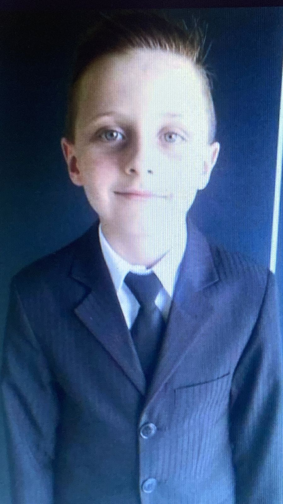

BIOGRAFIA TOP:
Me chamo joão Vitor Polles, mais conhecido como Polles, cursando o 2° ano do ensino medio, soube me
tornar alguém mais responsavel, sempre fui um aluno chato, a grosso modo, burro, tanto que reprovei
2 vezes no 8° ano, porém com a idade e certas responsabilidades vindo, soube separar o certo do errado
